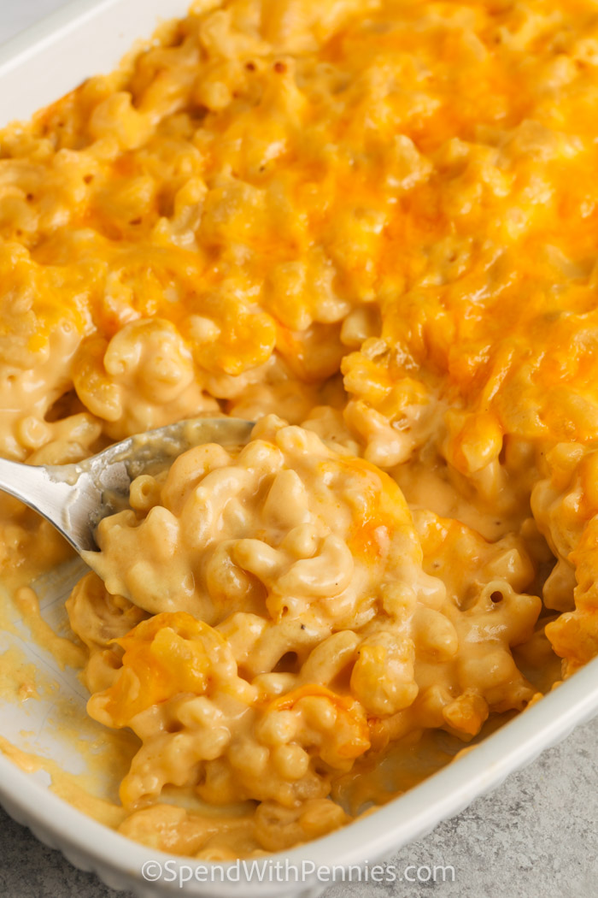

Mac N Cheese

Description
Mac and cheese is an awesome dish. It's a pasta dish with a cheese sauce that's been a staple on American tables for a long time.
It's relatively easy to make and can be used as an entree or a side dish.
Ingredients
- 8 ounces uncooked elbow macaroni
- 1/4 cup butter
- 2 1/2 tablespoons all-purpose butter
- 3 cups milk
- 2 cups shredded sharp cheddar cheese
- 1/2 cup grated parmesan cheese
- 2 tablespoons butter
- 1/2 cup bread crumbs
- 1 pinch paprika
Steps
- Preheat the oven to 350 degrees F (175 degrees C)
- Cook macaroni according to the package directions. Drain.
- Melt butter in a medium skillet over low heat. Gradually add flour, whisking until well combined. Slowly pour in milk, whisking constantly until smooth. Stir in cheeses, and cook over low heat until cheese is melted and the sauce is a little thick. Put macaroni in large casserole dish, and pour sauce over macaroni. Stir well.
- Melt butter in a skillet over medium heat. Add breadcrumbs and brown. Spread over the macaroni and cheese to cover. Sprinkle with a little paprika.
- Bake in the preheated oven for 30 minutes. Serve.